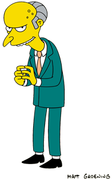
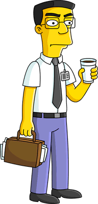

Introducing: Mr. Burns & Associates
The Stingy Billionaire

Mr. Burns, the living embodiment of a billionaire buzzkill, could probably squeeze a nickel until it cried for mercy. His heart is so cold that even penguins would refuse to carpool with him. If you ever hear him say, "Excellent," you better hope he's not eyeing your last piece of pizza at the company party. I mean, this man once tried to block out the sun. Who needs Vitamin D when you can have Mr. Burns, right? He's the guy who thinks "environmentalism" is a fancy way of saying "using one less diamond-encrusted toilet." Mr. Burns is to generosity what a fork is to soup – completely out of place and utterly ineffective.
Loyal Assistant Smithers

Smithers, the unsung hero of Springfield, is like a loyal golden retriever who has to deal with a master who thinks fetch is a game for the underprivileged. When Mr. Burns calls him "Waylon," it's like the boss is trying to summon a genie from a lamp. If Smithers had a nickel for every time he said, "Yes, sir," he'd have enough money to buy Mr. Burns a personality transplant. He's the ultimate yes-man, and you can't help but feel bad for the guy. If Mr. Burns asked him to run a marathon with a cinder block tied to his ankle, Smithers would probably ask, "How far, sir?"
The Legal Perfectionist
The Blue-Haired Lawyer is so professional that even his toupee wears a tie to work, and it likely has a more prestigious law degree than most actual lawyers in Springfield. He's the kind of attorney who considers a game of Monopoly a casual Friday night, where he meticulously reviews the rulebook before anyone can roll the dice, just to ensure no one cheats at a friendly board game. If he ever decided to quit law and become a stand-up comedian, his punchlines would be objections that sustain laughs for days. His humor would consist of dry, legal jargon that somehow leaves the audience in stitches. When he enters a courtroom, he does so with the grace and dignity of a Shakespearean actor, as if he's about to deliver a soliloquy on the nuances of tort law. Seriously, if he gave you his business card, it would probably come with a legal disclaimer: "Reading this card constitutes a binding contract, and any accidental tears may result in a lawsuit for damages." You half expect him to file a lawsuit for the improper use of emojis in text messages.
The Bumbling Attorney
Lionel Hutz, the legal aficionado of Springfield, is the guy who'd argue with a brick wall and convince it to file for damages. He's got a drawer full of business cards with his name crossed out and new professions scrawled in crayon, like "Doctor Hutz" or "Astronaut Hutz." You have to hand it to him; he's the only lawyer who considers "objection" a conversation starter at parties. His courtroom tactics are as unpredictable as a game of musical chairs, and he once tried to present a live raccoon as a character witness. If you're ever in need of a lawyer who can simultaneously argue the merits of a case and sell you a set of Ginsu knives, Lionel Hutz is your man.
Sane in a Mad World

Frank Grimes, the perpetual straight man in a world gone mad, must have a secret stash of "I survived Springfield" t-shirts. His daily routine involved witnessing Homer's shenanigans, with each mishap making him contemplate the meaning of life. Frank Grimes would probably find a way to make even "The Three Stooges" seem like a documentary about workplace safety. His existence in Springfield was like a lightning rod for absurdity, as if he were the one sane person in a circus run by clowns. It's like he walked into an episode of "The Twilight Zone" and decided to stay. When he looked at Homer, he saw a walking, talking OSHA violation, and it's a wonder he didn't apply for hazardous duty pay. If there's a patron saint of patience, Frank Grimes should be the frontrunner for canonization.